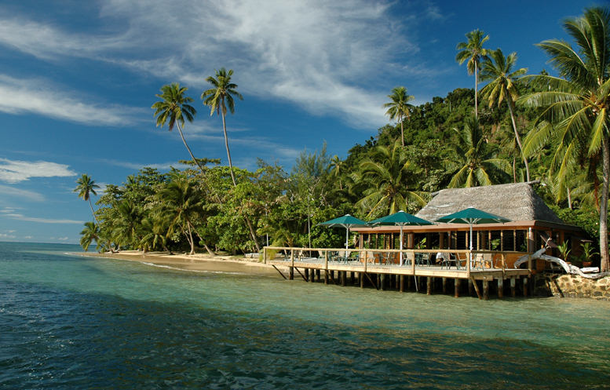
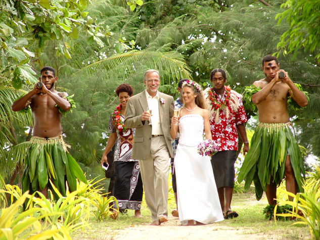

MATANGI PRIVATE ISLAND RESORT has a huge new Dining Bure with Rec Center onshore.
All 5 photos in this cluster © Copyright John Hessburg, U.S. Dive Travel. All Rights Reserved.
| Home / Dive Resorts / Live-Aboards / Snorkeling / Who We Are / Book a Trip |
MATANGI PRIVATE ISLAND RESORT, Fiji's exclusive tropical croissant
for fun snorkeling & scuba diving adventures, Fiji weddings & Fiji honeymoons!
Many tropical photos here are provided courtesy of our longtime friends & Fiji diving
partners at Matagi Private Island Resort, gem of the Fijian South Pacific.
© Copyright Matangi Private Island Resort / Douglas Family.

MATANGI PRIVATE ISLAND RESORT, previously known as "Matagi Island,"
is a sweet elite retreat for city-weary souls seeking Fiji sunshine.
MATANGI PRIVATE ISLAND RESORT is blessed to offer several idyllic sandy beaches
for sun-basking, surfside strolling or eye-candy snorkeling vacations.
© Copyright U.S. Dive Travel Network.
The FIJI ISLANDS:
MATANGI PRIVATE ISLAND RESORT
-- formerly known as Matagi Island Resort.
Magical tropical atoll; perfect for a FIJI WEDDING, FIJI HONEYMOON, FIJI SNORKELING PACKAGE or FIJI DIVING VACATION !!!
Nuts to inflation -- prices subject to change, of course, if resort owners so decide, but they are projected to be stable through March 31, 2018: 3 Ocean-View Bures -- USD $690/night + 25% gov't tax. 5 Beachfront Bures -- USD $790/night + tax. 3 TreeHouse Bures -- USD $970/night + tax. One 2-Bedroom Villa -- USD $1200/night + tax. Extra Person Cost/Night = USD $250 + tax. Rates include all meals. Drinks, ferry transfers, diving & air tickets extra. Children younger than 16 y.o. only allowed during private full-resort charters.
NEW "REACH-for-the-BEACH SPECIAL" -- ( We are currently offering 2 nights free for 7 night stays -- all longer stays too -- for Matangi Island snorkeling & diving packages -- any time in the year 2016 or 2016, while space lasts.
Now for a practical look at this wonderful special ... Do the math & this will bring you a big smile, sunseekers: STAY 7 NIGHTS / PAY ONLY 5 NIGHTS -- meaning no less than a USD $1,725 discount per couple per week. Offer holds while space remains open. Prices subject to possible change later in the year as taxes & tariffs may flux.
Call our Fiji travel planners about new wholesale air tickets (LAX-NAN) for rates happily below retail prices! These air specials only hold while limited seating remains.
Hear ye, hear ye, sunseekers & beach creatures: this is the same wonderful Matangi, just a new name after a vast remodeling project. You should see the island now, the place just gleams, more comfy & relaxing than ever ....
Normally, 5 days of guided 2-tank boat diving will cost approx USD $637 per diver + tax. Ferry transfers from Taveuni Island to Matangi Island are extra -- about USD $150 pp + tax.
With current U.S. dollar valuation flux, & government tax shifts, all prices subject to possible change. As always, every peak season since we started in 1991 -- the early bird gets the bure !!
Phone our Fiji vacation experts (USA number) at 952-953-4124 for up-to-date specials, wedding & honeymoon prices, group discounts, Fiji snorkeling packages, Fiji diving packages -- even a special anniversary celebration in Fiji.
Most of the units are brilliant beachfront deluxes, all newly refurbished. Three are private South Pacific treehouses, unique in all of Fiji. All 3 TreeHouses offer private deck with beautiful outdoor shower & spa. Matangi also has a wonderful new Great Bure (central dining lodge shaped like a huge octagonal pyramid) + a sparkling new pool & pool deck right beside the Great Bure. There is also a BEAUTIFUL 4-person-capacity private Villa right near the waterfront, which is ideal for small families.
MATANGI PRIVATE ISLAND RESORT has a huge new Dining Bure with Rec Center onshore.
All 5 photos in this cluster © Copyright John Hessburg, U.S. Dive Travel. All Rights Reserved.

MATANGI PRIVATE ISLAND RESORT features 3 inspiring TreeHouses, unique in the SoPac.

MATANGI ISLAND RESORT also has a new swimming pool, to beat the mid-day heat with ease.

Another view of the new pool, looking from the Great Bure at MATANGI ISLAND RESORT.

Looking west towards peaceful Qamea & Taveuni islands,
from a sunset beach at MATANGI ISLAND RESORT.
Included in your Fiji vacation package, all seasons, are: all meals + snacks + free laundry service + periodic guided excursions + 20% Fiji gov't tax. Round-trip water taxi transfers, about 1.5 hours each way, from Taveuni Airport to Matagi Island are extra -- about USD $150 pp.
DAILY ROOM RATES for BEACHFRONT BURES always charged in local Fijian dollars, then converted to $USD:
1 Fijian dollar = about USD $0.65 - 0.75. This currency exchange rate has been remarkably consistent for years now.
DIVING FEES are EXTRA ( including tax, tanks, weights, guide + unlimited shore diving) = approx USD $150 pp / day for 2 tanks.
SNORKELING is, of course, free & easy! And wonderfully plentiful as well, on all sides of this exceptionally pristine island.


MATANGI PRIVATE ISLAND RESORT -- our premier South Pacific vacation destination
for Fiji beach weddings, Fiji honeymoons, anniversary getaways & Fiji scuba diving trips.
Bird's-eye view with a fish-eye lens of a delightful seaside cabana, called a Deluxe Bure.
Another impeccably appointed cabana at Matangi -- a Deluxe Bure -- airy, bright, clean & fragrant.
OK, take a li'l peek all ye jaded world travelers....is this cool, or what ?
Nearly all bures at Matangi offer exotic, hand-crafted outdoor showers
|
|
|
|
|
|
HOW YOUR TRANSFERS WORK:
Clients are picked up by a private car at the
Taveuni Airport, then delivered to the North Taveuni docks. The airport pickup + water taxi service from Taveuni Island
to Matangi Island Resort, round-trip, costs approx. Fj $145 extra per adult (kids 12 years old & younger go free).
|
|
|
Matagi has splendid hidden beaches, tucked away, private, serene.
Included in your Matangi Island Resort package: lodging + guided boat diving (tanks, weights & divemaster guide included) + all meals + mid-day snacks + non-alcoholic beverages + free laundry service + periodic guided excursions + Fiji government tax pre-paid. As always, clients pay their own cabfare from Taveuni Airport to the waterfront + the water taxi to Matangi Island. For any questions please phone our Fiji experts at 952-953-4124 & they will be happy to call you back on our hotline, at any time of your convenience.
|
|
|
|
|
|
Matangi Island gourmet joys.
Your Matangi Island dive package includes: Lodging in a private ocean-front bure with a magnificent South Pacific view, right near the lagoon + 3 delicious sit-down meals each day + Fijian sales tax paid + unlimited free tank refills for shore diving in the lagoon + round-trip transfers from Taveuni docks by speedboat to Matangi Island (pronounced Ma-TAHNG-ee). This island used to be called Matagi for many years, until the phonetic equivalent changed recently for the convenience of dive tours. For those folks toting kids, baby-sitting is available at nominal fees from local village women who work with the resort. The village women of Matangi Island are very reliable & gentle with children -- the best nannies this side of the big blue Pacific.
So, how do our dive tours get you to Matangi Island, one of the most beautiful & exclusive resort getaways in the Fiji Islands, or even the greater South Pacific? First, you fly from the West Coast to Nadi (pronounced "NAHN-dee") on Fiji's main island, Viti Levu, which is about 3,174 air miles southwest of Honolulu. Then you grab a puddle-jumper flight from Nadi up to Taveuni Island, which sits about 90 miles northeast of Viti Levu, right on the Strait of Somosomo.
Then the resort sends a vessel to meet you at a North Taveuni dock, just a quick mini-van ride away from the Taveuni airport. You travel about 6 miles offshore, to the northeast; & 40 minutes later you're on Matagi. This is a lush & scenic half-moon-shaped atoll, perched stop an extinct volcanic crater, about 240 acres, with a dramatic 440-foot-high promontory in the middle. Matangi Island has been owned by the Douglas family for many years; & they run the island with keen attention to detail, & care for the environment. South Pacific dive trips are their life force & they are artists here.
Another fine beach at high tide, pristine & clean, beggin' for some toe-scrunching, mates.
|
|
|
MATANGI PRIVATE ISLAND RESORT offers exquisite Fiji beach bungalows.
The Matangi Island treehouse, one of the South Pacific's most unique lodging units, is really for any couples, not just newlyweds, who want to rekindle their romance in a wonderfully peaceful setting, where the staff pampers you like relatives at a reunion. Nestled 30 feet above ground in a South Pacific almond tree, this secluded aerie features a commanding view of the Tasman Straits, across gentle seas to Taveuni, where you can take day trips any time you wish. (See the first Fiji item in the resort directory for details on the many exciting side tours on Taveuni Island). With the ocean softly lapping below you, & tropical birds singing in the branches all around you, you're guaranteed to see your stress dissolve, then evanesce, like shave ice on a summer sidewalk.
At Matangi Island Resort, each of the 10 beautifully decorated bures (traditional South Pacific thatch-roofed cabins) features a queen-sized bed & a lounge area with a day bed, plus full bathroom with shower & vanity. There's a fully-stocked mini-bar & a coffee maker with Fijian-grown beans to savor, a ceiling fan & a cozy little net draped over the bed in a romantic canopy. The meals on Matangi Island are marvelous & this dive resort has an ample wine list to satisfy even picky palates. After all, Fiji diving trips are more than clunky tanks & regulators.
Kids love Matangi Island Resort because there are acres of trees & hills to explore & the island is safe & secure for them -- no dangerous land critters, no sinkholes, no bad tropical bugs (neither viral nor the many-legged kind). There's zero malaria in Northeastern Fiji; another plus. With a few tips on steering clear of urchins & cone shells -- the obvious ocean bugaboos -- kids can snorkel safely in the lagoon when weather permits; & parents needn't worry a bit. In fact, the Matangi Island Resort region of Fiji may be one of the South Pacific's most child-friendly ocean sectors, with its gentle currents, warm clear water & plenty of healthful sunshine.
The 3 Treehouse Bure units are truly renowned,
& reserved for couples, especially newlyweds.
|
|
|

Kay proudly shows Lomalangi Treehouse (House of Heaven) at MATANGI RESORT.
6 photos in cluster © Copyright John Hessburg, U.S. Dive Travel. All Rights Reserved.

Lomalangi Treehouse at MATANGI RESORT features
outdoor rock-wall shower + Jacuzzi.

MATANGI ISLAND RESORT is famous for TreeHouse outdoor showers.

Jacuzzi in Lomalangi Treehouse at MATANGI ISLAND RESORT.

Quiet understated elegance, the front room at Lomalangi Treehouse...

... and the bathroom is comfy, too, in the House-of-Heaven TreeHouse.
|
|
|
You'll be overwhelmed at first by the depth of service & kindness that Fijians show to all newcomers to Matangi Island Resort. These Melanesian South Pacific natives are among the world's most gracious hosts; it's part of their family-centered culture, bred into their temperaments from birth. They won't even take tips from you, since service is an honorable art to them, which gives them great pleasure & self-esteem. You will be spoiled out of your socks by the innocent culture of Fiji, & by this island, a very unique marine sanctuary.
Now for a bright spot in Fiji diving. There's a lot of ballyhoo in some pretty overblown diving magazines about Fiji diving being centered on Viti Levu, the big island. Balderdash. Baloney. Bull-roar. Barnum & Bailey. Stay as far away from the touristy kitsch of that island as you can. Real Fiji diving is around the Taveuni-Matangi sector. The diving & snorkeling in Northeastern Fiji is widely acknowledged to be the best in the Fiji Islands, & one of the world's prime sectors for wildly colorful soft corals & hordes of reef fish. Matangi Island's own lagoon & environs are rich in corals & fish life, & the reefs are more protected, with less current than the Somosomo Straits usually offer. Your Matangi Island Resort dive guides know this sector like their own back yard, & they'll show you some underwater havens that few people ever are blessed to visit. Fiji diving at Matagi Island Resort is like plunging into a kaleidoscope of Pacific Ocean vitality. Relaxing, easy, warm water with great viz: that's the gist of Matangi Island diving & snorkeling. And this is one of the prime nerve centers for excellent Fiji diving, our leaders on these South Pacific dive tours confirm.
With only 10 bures & a maximum of 24 guests, Matangi Island Resort never feels crowded or trampled by visitors. Among other water activities you can pursue after your Fiji diving or Fiji snorkeling are: windsurfing, paddle-boarding, Hobie-cat sailing, saltwater fly fishing, & picnic jaunts to thundering Bouma Falls on Taveuni. Local villagers each week perform a rousing meke -- traditional songs & folk dancing that will gladden your heart.
The peaceful & hospitable spirit of the Fijians is a balm to tired
travelers. This pure & simple escape, the green trees, the flowers
& their fresh scent, the perfect underwater grottoes, will weave their
way into the fabric of your mind & your heart; & when you return
home, you will always have a fresher outlook on what life can really be
when the stress of the city is ignored for a brief shining moment in the old-fashioned South Pacific. Fiji
changed our lives forever. You may be blessed the same way. Forget anxiety
& regrets; dive right in. Dive trips to Matangi Island create a magic that lasts a lifetime. Just close
your eyes at your desk, lean back, breathe deeply in -- & yes, you're
back again. You made it. "Vinaka vaka levu, Fiji Islands" you will whisper. "Thank you, big time!"
|
Photos in this series are copyrighted by the photog's named on image. |
beach of this tropical croissant. Lagoon brims with fish & corals! |
|
|
|
Before we dive into some fun tips for side tours while you're on Matangi Island, here is one important tip for travalers: the Fijian people are so gracious that they will not even accept tips from you. To tip would insult a Fijian, for whom TLC service is an art form, a duty in which one takes the highest pride in pleasing guests, not in how much money one takes home at the end of the day. That's the soul of the South Pacific for you. It's been a while in North America since folks felt that way about their work, eh? That's one of many reasons why we feel that Matangi Island Resort & side tours (day trips) to the sister island of Taveuni are an ideal way to spend a perfect South Pacific honeymoon. Taveuni side trips, easily accomplished by taking the daily ferry from Matangi to the north end of Taveuni island, have a way of healing some pretty stressed-out people, we have seen over the years.
How could we ever list all the cool things about Taveuni without verging on hyperbole? Here's one fun factoid: you can walk a mere hundred meters down the village lane & you reach a concrete marker that you can straddle -- where your right foot is planted in Wednesday while your left foot actually is back in Tuesday! No kidding. This is the 180th parallel, where the world's geographic new day really begins!
A big plus for families who bring small kids is this: the local village ladies, who are sweet as Tupelo honey, will "nanny" your kids for half a day or more, for only a few dollars an hour. It would take an encyclopedia to list everything we love about Taveuni, but we'll start here & now with the Reader's Digest version.
In a South Pacific vacation industry that's riddled with giddy superlatives, where many dive resorts & live-aboard diving vessels boast that they're "world class;" & every reef is supposedly "pristine & unspoiled," it's tough to find a place that really lives up to its hype. Taveuni people don't hype their island. This South Pacific island sells itself. Just like a kid's smile does. They don't need to hype Taveuni to get people down here. Coming straight from the heart, & from a professional dive-travel partnership that has closely studied more than two dozen cultures & countries worldwide over the last quarter century, we believe we have found one island sanctuary that truly stands above any other in Polynesia. For reasons of spirit, geography & economy, that island is Taveuni; & we love it like no other.
After traveling the oceans of the world for decades, members of the Jacques Cousteau clan bought vacation land just across the channel from here. Taveuni Island is a place that, unless you have a heart of granite, will leave a magical mark on you forever. Northeastern Fiji is the unplucked pearl of the South Pacific. So where IS Taveuni, you ask?

Christine Douglas, daughter of founders Noel & Flo, at MATANGI ISLAND RESORT.
6 photos in cluster all © Copyright John Hessburg, U.S. Dive Travel. All Rights Reserved.

Senior Dive Guide at MATANGI RESORT, Ally Heffernan is an ace.

MATANGI ISLAND RESORT server Kimali Teafiula is calm, kind, confident.

Head Chef Joseph Ali at MATANGI PRIVATE ISLAND RESORT.

Matangi's Ferry Skipper Robert Mitchell lives on Qamea Island, in a peaceful village.

Dive shop attendant & handyman Leiatu Papa is
likely the most beloved gentleman on the staff.
He can weave a perfect palm basket in minutes!
|
2 photos by John Hessburg, U.S. Dive Travel. |
|
Fiji's main island, Viti Levu, is about 3,174 air miles southwest of Honolulu; & Taveuni sits about 90 miles northeast of Viti Levu, right on the Strait of Somosomo. Taveuni is an island abundantly blessed, first with the world-famous Rainbow Reef, next with mountains, river, waterfalls & glorious jungle topography. You'll find gracious & hospitable people, wonderful weather, a scarcity of hazards & a reef environment so brilliant that it's rivaled in wild color & marine life by maybe only the Red Sea, Palau, Papua New Guinea, the Solomon Islands & Indonesia. Your Fijian hosts are incredibly easy-going, sweet-spirited & generous.
Not one month goes by when we don't think of Taveuni island & want to return there soon. We always try to imagine what our neighborhoods, schools, churches & workplaces in the U.S. would feel like if they followed the same simple rules of human decency & kindness that are standard everyday reality on Taveuni island -- & in most of Fiji's outer isles. Thus is born the only major regret we've ever had about Fiji: that we can't be there nearly all the time, or at least live among people who treat one another with the courtesy & dignity that the Fijians simply take for granted. We believe there's more to an earthly Paradise than mere geography. Palm trees, sugar sand, lapping surf; sure all of those things are great to be around. But there's more. The ethos of a culture, the sense of community, the stability of traditions, the civility so lacking in big American cities -- these may be the real ingredients of the Paradise we are all subliminally seeking when we take our vacations. Tough to put such spiritual factors into language; but you surely feel you've come home when you visit Tavueni Island.
Taveuni also offers some of Fiji's most colorful diving, on the globally renowned Rainbow Reef, where abundant corals & swarming Technicolor fish create a living light show. Some dive pros clain Taveuni diving IS Fiji diving at its best. Many of the best Taveuni Island sites can be accessed by your vessels on Matangi Island. Some special dive days you'll enjoy your dive-day lunch on a trackless half-mile strand of white sugar sand on Fiji's second largest island, Vanua Levu, about 10 miles across the Somosomo Strait from Taveuni. Here on this deserted beach you'll see playful sea turtles, a great snorkeling cove & a lush jungle canopy with plenty of cool shade. Among classic dive sites you'll visit are The Great White Wall, Blue Ribbon Eel Reef & Annie's Bommie. The Taveuni-area currents are a bit frisky some days, but that moving water feeds the soft corals, which bloom to awesome density & size on the Rainbow Reef. Taveuni Island diving is always athletic, but the exertion is hugely rewarded by ample Fiji diving treats -- outstanding "viz" & marine life that won't quit.
Spiritual nerve center of
Taveuni island, Bouma Falls.
Photo by John Hessburg.
Now back to the land. Fiji is safe & clean. There is absolutely zero malaria, no dangerous land insects or critters, no political unrest -- unlike other prime coral-reef regions in the South Pacific tropics such as the Solomon Islands & Papua New Guinea.
But there's something more; something exotic on Taveuni island -- the back-country side tours. You can do most of these on your own, for the mere cost of a cabby & park entry fees.
For example, you can hike about 25 minutes from the lodge out to the Waitavala Waterslide, a modestly steep stream bed that forms a natural "body bobsled" chute several hundred meters long. This waterslide careens down a hillside, & you zip down its mossy stream bed, laying on your back, feet first. You can whizz down the slide about 15 mph, no bumps & no bruises, then you spill out perfectly safe & laughing hysterically, into a cool pool at the bottom of a small cascade. It's outstanding fun! This waterslide, & much of Taveuni island, were featured in the film "Return to the Blue Lagoon."
Another day you can hire a cab to towering Bouma Falls, then spend half a day hiking up to see the three tiers of this magnificent waterfall, which are interspersed along 4 miles of challenging jungle trails. Each tier is 50-80 feet high, with thundering volumes of water & clear deep pools below, perfect for swimming & swan diving off the rocks. Oddly beautiful purple-velvet-covered freshwater crabs glide along windfall trunks at river's edge. Exotic birds flit through the tree canopies: red & green parrots, flaming orange doves, mischievous magpies. This place is peaceful, clean & serene -- pure joy.
You also might want to spend one afternoon visiting quiet little Lavena Village, where after securing permission from the chief, you may take photos of the spunky children & their sweet games with primitive stick toys. You'll see many traditional huts called "bures," & you'll have to politely fend off a myriad invitations to dine or drink kava with families all over the village. These folks are so kind & caring they'd adopt you in a wink if you let them. There is no equivalent in North America to the ingenuous hospitality of the Fijian people. They will enchant you, pure & simple.
Near Lavena village on Taveuni, you'll want to hike these ancient South Pacific beaches searching for perfect specimens among thousands of rare & bizarrely shaped seashells that are tossed ashore every day by new tides. (To respect the island's ecosystem, we recommend you don't remove any shells; just photograph them.) Days like this produce memories of natural wonders & warm native souls that travelers will treasure for a lifetime. The Fijian people are so sweet-spirited & giving that their hospitality & humor will refresh even the most stressed-out city folks. Their laughter is musical, almost healing. You'll see.
On another great Taveuni island day trip, you can rent a Jeep or take a taxi to the trailhead, then spend an entire day hiking up a long & semi-strenuous jungle trail, replete with slippery rocks, gnarled roots, & knotted vines to grab ahold of, as you climb towards the summit of Des Voeux Peak, nearly 4,000 feet above sea level. Nestled below the pinnacle is Taveuni's most famous geographic landmark -- Lake Tagimaucia, a deep body of pristine water that fills an ancient volcano crater, similar to hidden mountain lakes in Guatemala.
Lake Tagimaucia is filled with floating masses of lush vegetation & is home to Fiji's most prized flower, the "tagimaucia." This huge tagimaucia blossom, which can be as big as a bowling ball, is bright red with a white center. The Lake Tagimaucia trail is often muddy & challenging, so clients are advised to wear battered old tennies or lightweight boots. If time & weather permit, some members of the party may try for a closer approach to the summit, for some spectacular views of Taveuni island from one of the highest points in all of Fiji.
A special bonus on many Lake Tagimaucia hikes is some of the finest bird-watching in Fiji. Two beautiful species that exist nowhere else on Earth -- the Orange-Breasted Dove & the Silktail -- flit about in the verdant jungle that rims this awe-inspiring lake.
There are other exotic photo & trekking safaris to enjoy on Taveuni island :
Taveuni island can be summed up in one lilting phrase used by the natives -- it's written "seqa na leqa " but it's pronounced "senga na lenga" & it means "hang loose, everything is fine." Rare is the man or woman who boards their puddle jumper back to Viti Levu, & who doesn't have at least a glimmer of dew in their eyes when they leave Taveuni, the Flowered Island of Fiji. God bless Taveuni island, pure & simple as she is. Actually, He already has. You'll see for yourself.
The sea-scented days & peaceful evenings roll by like liquid gold on
MATANGI PRIVATE ISLAND RESORT, laid-back jewel of the Fiji SoPac.
FOR MORE INFORMATION or RESERVATIONS:
Contact Susan & John Hessburg, Mgrs
U.S. DIVE TRAVEL Network
PMB 307 / Suite # 116
15050 Cedar Avenue S.
St. Paul, MN, USA 55124-7047
Voice Mail: 952-953-4124
E-mail: divetrip@bitstream.net
Website: www.usdivetravel.com
******************************************************

Perfect little Beachside Deluxe Bure at MATANGI ISLAND RESORT.
6 photos in cluster © Copyright John Hessburg, USDT. All Rights Reserved.

Another idyllic OceanView Bure,just perfect for romantic couples.

MATANGI PRIVATE ISLAND RESORT has a brilliant new dining bure.

Talented master masseuse Winnie at MATANGI PRIVATE ISLAND RESORT.

The delightful Orange Fork-tailed Dove, an ultra-rare bird on Matangi.

The Rainbow Reef in Somosomo Strait, en route to Taveuni's Matei Airport.
IMPORTANT REMINDER about PRICES & TARIFFS:
All dive package prices listed here are subject to possible change in this steadily evolving Fiji diving & Fiji snorkeling market. Lodging & Fiji diving prices are traditionally stable, while air prices can fluctuate daily. Until air tickets are issued, all airlines reserve the right to change airfares without notice -- an industry standard. We at U.S. Dive Travel will price-protect you to the utmost of our professional ability; & that has been our pledge for one decade now. We normally secure excellent discount air tickets. Remember please, the federal government has deregulated airlines, so only they control their pricing -- not any travel professionals.
Please feel free to call our Fiji vacation experts at 952-953-4124 , for any questions you may have about these Fiji vacation topics -- Matangi Island, Matagi Island, Matangi Island Resort, Matagi Island Resort, Matagi, Matangi, Taveuni, Taveuni island, Fiji, Fiji Islands, Fiji diving, South Pacific vacations, South Pacific dive resorts, South Pacific diving, South Pacific snorkeling, or Fiji snorkeling & Fiji scuba diving
Unless specifically noted, these above Fiji scuba diving packages are prices for only the land-based portion of the dive resorts, in most cases reflecting double-occupancy rooms. At many dive resorts, there will be no triple-occupancy rooms offered. Some exceptions will be noted. International & commuter "island-hopper" airfares are always extra above these land costs. Nominal service fees are also extra for air tickets & the vessel + side tour components. The baseline tariffs for all clients start at $35 per person for the land portion + $25 pp for the air tickets. Late-booking clients may receive slightly higher tariffs on the lodging + diving at most of these dive resorts.
The preferred payment mode for all Fiji dive resorts & side tours is by cashier's check or wire transfer in U.S. dollars. All clients living outside the USA or Canada will need to pay for their Fiji scuba diving vacations only via direct wire transfer in U.S. dollars. No personal checks will be accepted for the land portion of any Fiji scuba diving or Fiji snorkeling reservation, please. Thank you for your gracious understanding. Our service level is the highest & our prices the lowest in this industry, & thus we need to preserve a reasonable margin. For published-fare air ticket bookings on your Fiji scuba diving vacation, USDT always accepts Visa & Mastercard. For ultra-discount wholesale air tickets, however, USDT accepts only cashier's checks, please.
Remember, all Fiji diving & Fiji snorkeling clients will be asked by local officials overseas, upon departing the airport on your final day, to pay a nominal government departure tax, usually between USD $35 - $45 per client. USDT cannot collect this tax beforehand, so you simply pay it down there, in your host country. Be sure to stash away a little cash for this final moment at the airport, so you'll get your exit visa stamped quickly with no fuss; & away you go. Best of luck with your dive travel plans.
We hope your Fiji scuba diving vacation is a safe & satisfying adventure. Blessings & best wishes with ALL your Fiji dive vacations.
Best fishes too!
>////*> <*\\\\<
John Hessburg & Susan Hessburg
Managers / Founding Partners
U.S. Dive Travel Network.
| Home / Dive Resorts / Live-Aboards / Snorkeling / Who We Are / Book a Trip |
© Copyright U.S. Dive Travel Network.